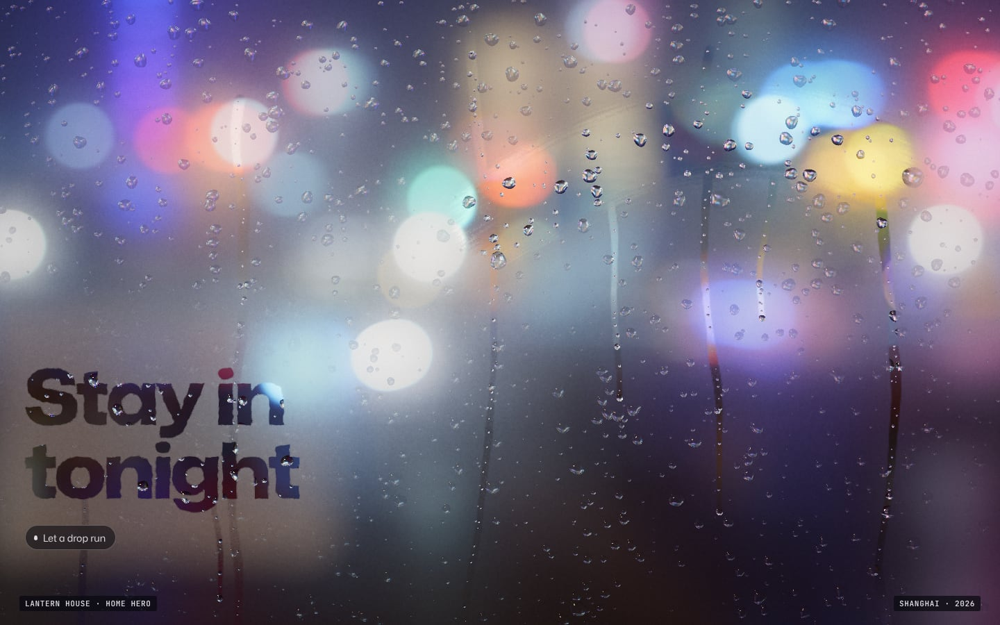
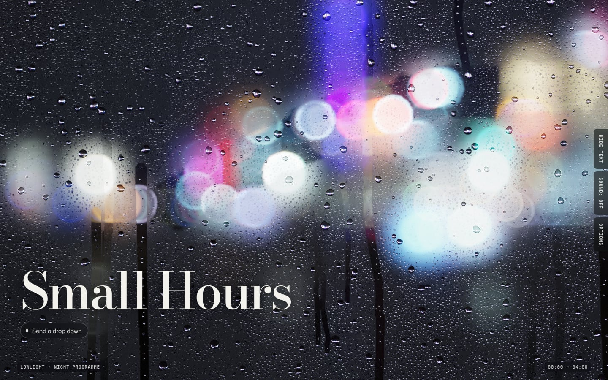
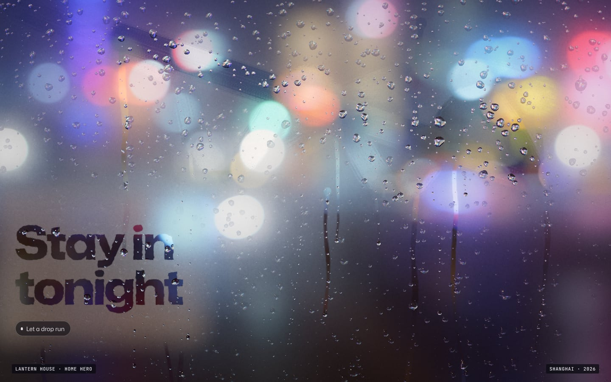
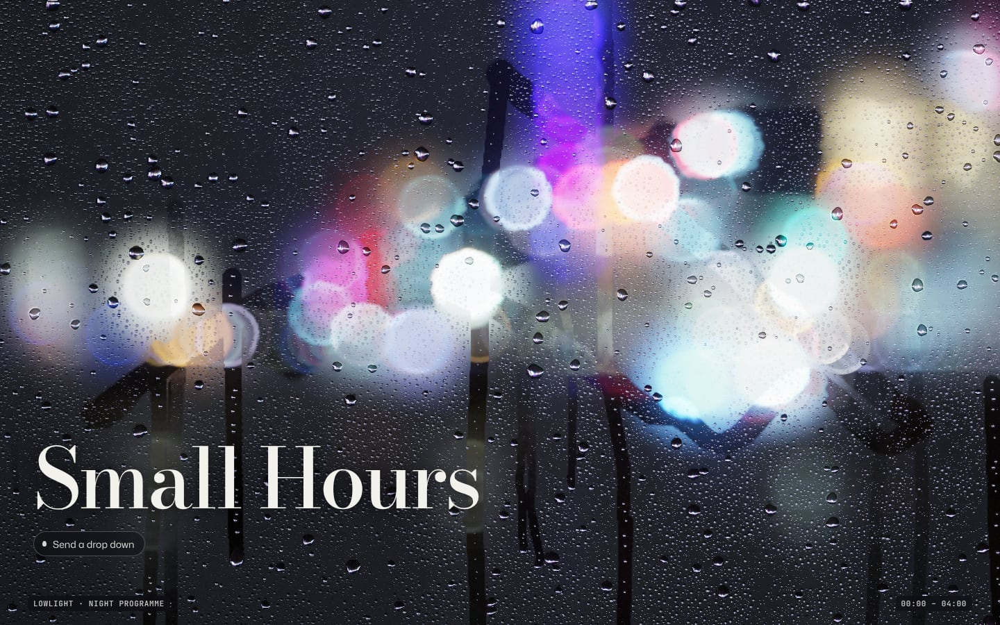
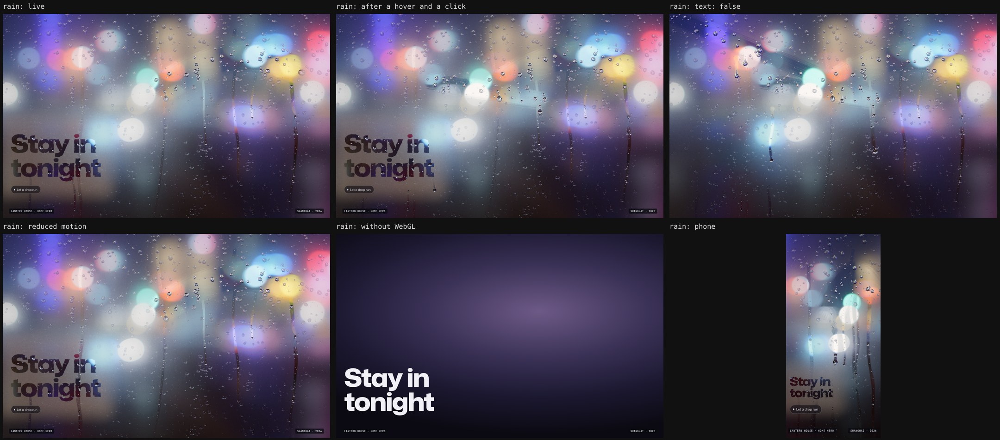
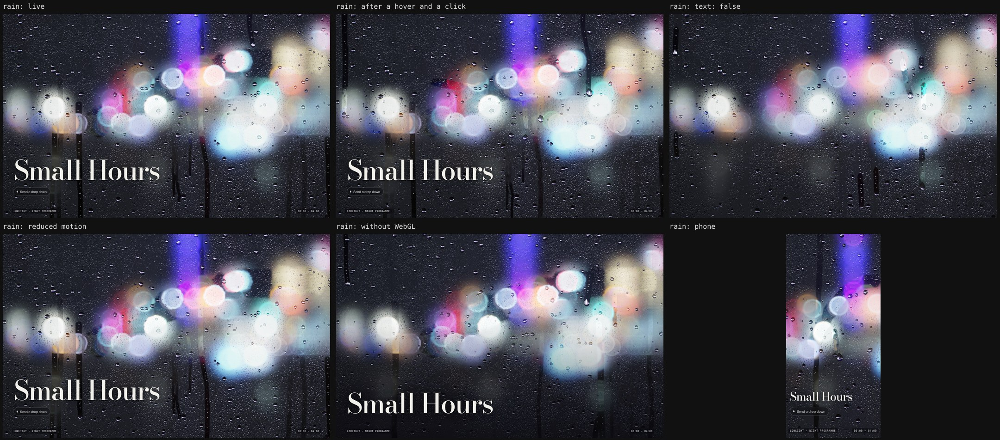

Lifelike Heroes · a test of the lifelike-hero skill
The same request went to two agents, each working alone in its own copy of the project. One had the
lifelike-hero skill, the other did not. Neither saw the other's work. Both pictures are live: open
one, move the mouse across the glass, and click.
can you add a new hero to the gallery? im thinking rain on a window at night, city lights behind it all blurry. moving the mouse should wipe the fog off the glass and a click sends a drop running down. it should look as real as the other three

Open it live →A 50 mm lens wide open, half a metre from a hotel room's window. The headline is written into the mist on the glass, from the page's own heading.

Open it live →A lens focused on the pane, so every lamp is a disc and every drop holds the city upside down. The headline is type laid over the picture.
Screenshots each agent took of its own scene after wiping the mist and sending a drop down.


| A · with the skill | B · without the skill | |
|---|---|---|
| Time to build | 93 minutes | 67 minutes |
| Tool calls · tokens | 133 · 510 thousand | 158 · 517 thousand |
| Scene contract check | passes, every line | passes, every line |
| Builds, gallery card, stills, README, credits | all there | all there |
| The city | Both chose the same photograph by themselves: Poly Haven's Shanghai Bund panorama (CC0), put out of focus offline in linear light | |
| The headline | Written into the mist: part of the picture, but faint. It stands 1.3 to 1 against what lies behind it | White serif type over the canvas: not part of the picture, but easy to read at 8.2 to 1 |
| By the same measure the pond's stone letters stand 2.0 to 1, the meadow's steel word 2.9 and the star chart's type 8.0 | ||
| The mist | Comes back in about a minute | Comes back in about 14 seconds |
| Assets shipped | 138 kB in 3 files | 371 kB in 4 files (one is its own no-WebGL still) |
| Cost to draw, in the sandbox's software renderer | about 1 frame a second | about 4 to 6 frames a second |
| Extra it wrote | A Node self-check of the pane's rules | A Node self-check of the drop rules |
Neither was ever run on a real GPU: both were built and judged at a few frames a second in software, so how they move at full speed, and how fast they run on a laptop, is for you to find out here.
Each scene live, after a hover and a click, without its text, as its reduced-motion still, without WebGL, and on a phone.
A · with the skill

B · without the skill
